Releasenotes eBlinqx Hypotheekadvies – Maart 2025
Onderstaande updates hebben wij in de maand maart doorgevoerd:
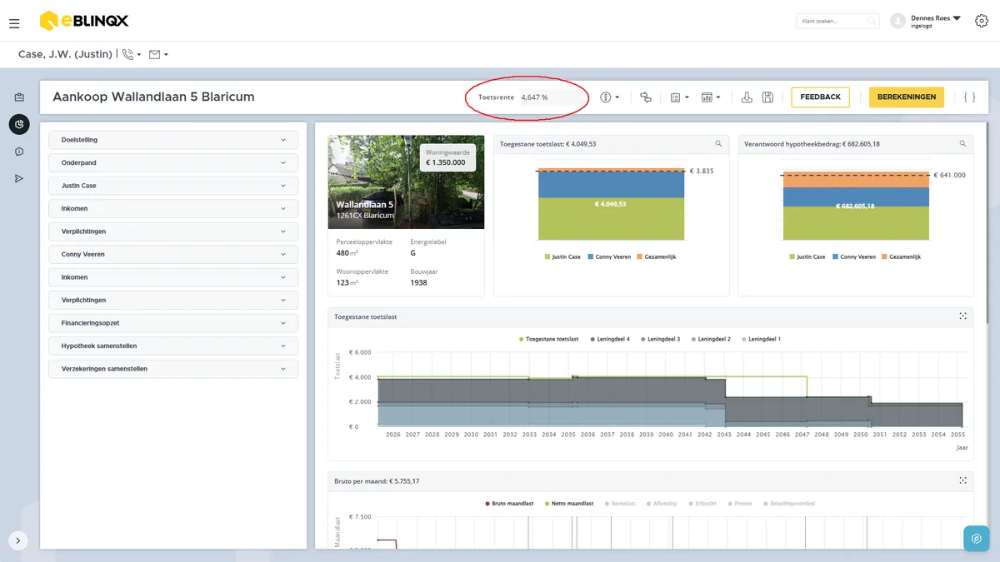
IT-24958: Verbetering berekening gewogen gemiddelde toetsrente
In deze release is een verbetering doorgevoerd in de bestaande berekening van de gewogen gemiddelde toetsrente. Vanaf nu wordt bij deze berekening rekening gehouden met de restant looptijd van alle aanwezige leningdelen binnen de hypotheekconstructie. Door deze verbetering sluit de toetsrente nauwkeuriger aan bij de werkelijke risicoverdeling van de leningdelen. Dit zorgt voor een betrouwbaarder beeld van de financieringslast en een toetsing die beter aansluit bij de praktijk.
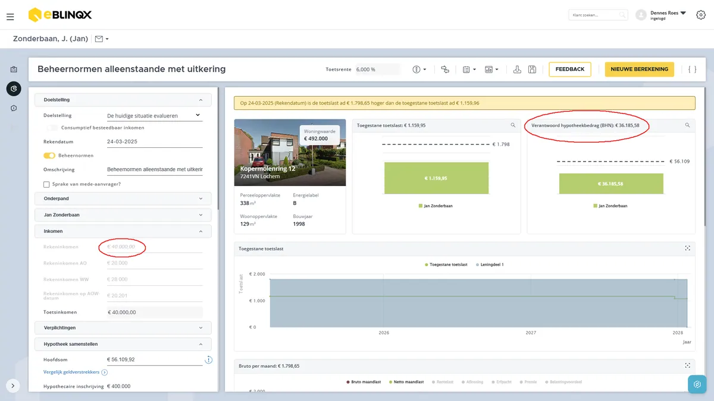
IT-19501: Beheernormen voor alleenstaande of (echt)paar zonder werk
In deze release hebben wij de financieringslasttabellen 'beheercriteria alleenstaande of (echt)paar zonder werk' toegevoegd aan de applicatie.Vanaf nu geldt dat wanneer een klant uitsluitend inkomen heeft uit: een uitkering, vermogen, ander inkomen, of een combinatie hiervan, wij bij het vaststellen van de beheernormen gebruik maken van de aangepaste tabellen zoals opgenomen in Bijlage 5c. Dit sluit aan bij het specifieke profiel van klanten zonder werk en zorgt voor een juiste beoordeling van de financieringslast.
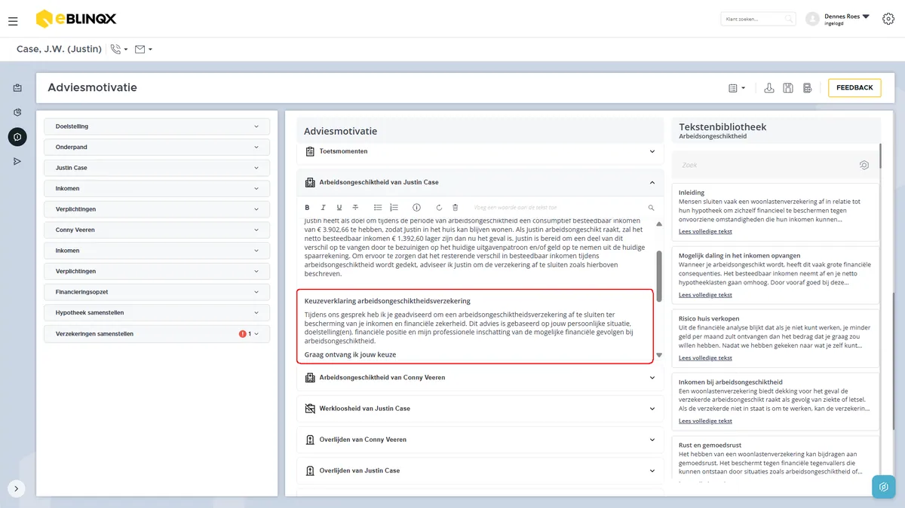
IT-24954 – Standaardtekst uit tekstenbibliotheek wordt automatisch toegevoegd aan adviesmotivatie
Het is nu mogelijk om in de tekstenbibliotheek een tekstblok als standaard aan te merken via de checkbox Gebruik als standaard. Wanneer deze optie is aangevinkt, wordt de betreffende tekst automatisch toegevoegd aan het juiste adviesmotivatie-blok in eBlinqx Hypotheekadvies. Belangrijk hierbij is dat de automatisch gegenereerde tekst behouden blijft: de standaardtekst wordt toegevoegd naast de gegenereerde tekst en overschrijft deze dus niet. Zo kunnen gebruikers sneller en consistenter werken, zonder waardevolle inhoud te verliezen.
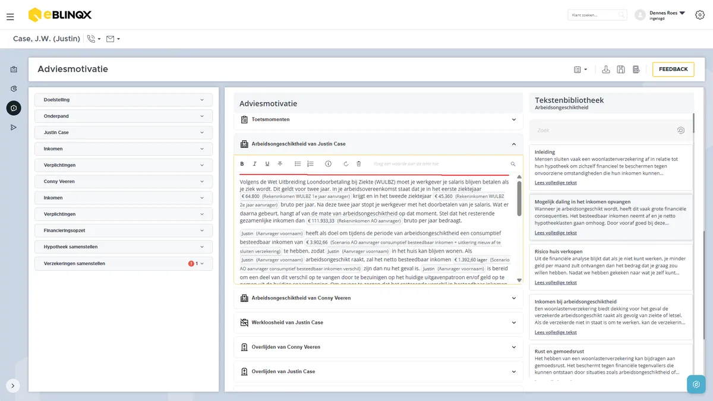
IT-24952 – Ongewenste witregel bij toevoegen tekst uit tekstenbibliotheek verwijderd
Bij het toevoegen van een tekst uit de tekstenbibliotheek aan het onderdeel Adviesmotivering verscheen er automatisch een witregel bovenaan het tekstveld. Dit leidde tot onnodige witruimte aan het begin van het advies. Dit gedrag is aangepast: er wordt geen extra witregel meer toegevoegd aan het begin van de Adviesmotivering. Wanneer er meerdere tekstblokken worden toegevoegd, blijft er wél een witregel tussen de blokken staan, zodat de leesbaarheid behouden blijft.
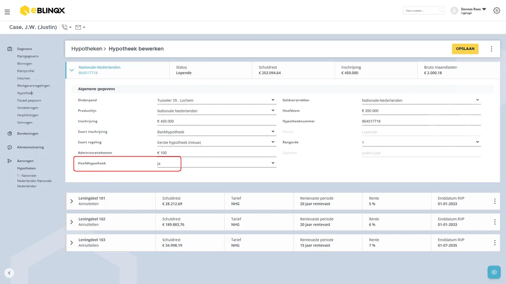
IT-24555: Hoofdhypotheek altijd meenemen in eBlinqx Hypotheekadvies-berekening
We hebben een verbetering doorgevoerd in de eBlinqx Hypotheekadvies-berekening om ervoor te zorgen dat de hoofdhypotheek altijd correct wordt meegenomen.
Wat is er veranderd?
- Binnen de inventarisatie wordt voortaan de hypotheek die is gekwalificeerd als 'Hoofdhypotheek' automatisch meegenomen in de nieuwe berekening.
- Dit geldt ook voor berekeningen binnen de doelstelling 'Huidige situatie evalueren'.
Deze wijziging draagt bij aan een betere consistentie en nauwkeurigheid binnen Fastlane Advies.
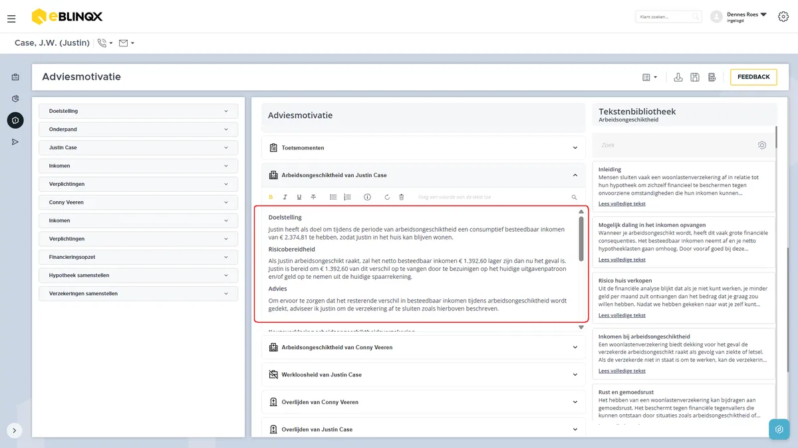
IT-24951: Cosmetische wijzigingen tekstblokken adviesmotivatie
Om de leesbaarheid en structuur van de automatisch gegenereerde adviesmotivatie te verbeteren, wordt de tekst voortaan opgedeeld in drie duidelijke secties bij de volgende life events:
- Arbeidsongeschiktheid
- Werkloosheid
- Overlijden partner
- Einde relatie
- AOW
De adviesmotivatie wordt opgesplitst in de volgende onderdelen:
- Doelstelling
- Risicobereidheid
- Advies
Deze wijziging zorgt voor een logischer opbouw en maakt het voor de gebruiker eenvoudiger om de relevante informatie te vinden.
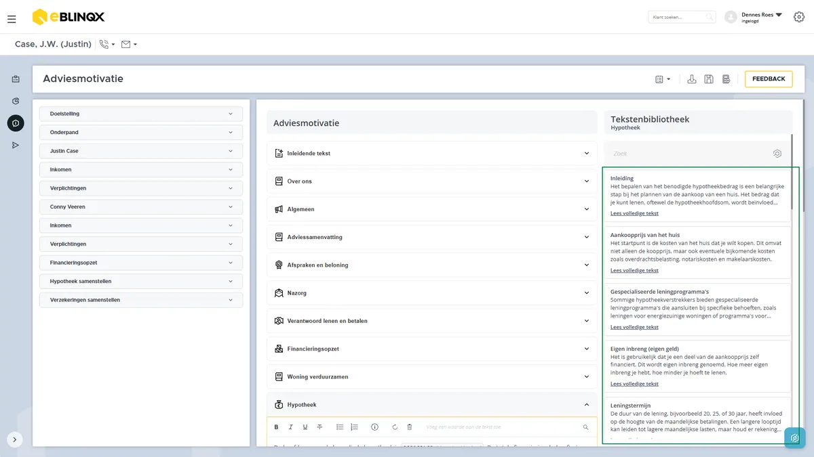
IT-25047: Optimaal gebruik van de ruimte
We hebben de beschikbare ruimte voor het tonen van adviesmotivatie-teksten binnen het onderdeel Adviesmotivering in eBlinqx Hypotheekadvies gemaximaliseerd. Hierdoor kunnen nu meer teksten tegelijkertijd worden weergegeven, wat zorgt voor een beter overzicht en een verbeterde leeservaring. Dankzij deze optimalisatie wordt de informatie efficiënter gepresenteerd, waardoor gebruikers sneller de juiste motivatie kunnen vinden.
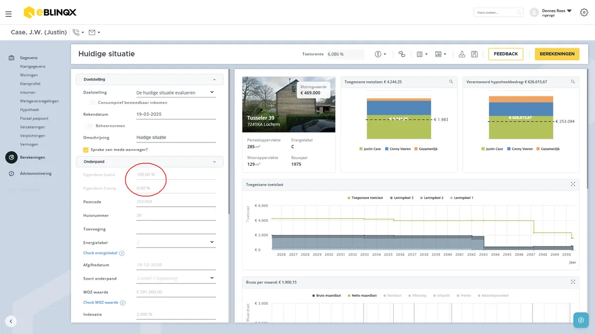
IT-24772: Eigendomsverhouding bij samenwoneners
Wanneer een samenwonend stel een onderpand had waarbij slechts één van beiden (100%) eigenaar was, werd in Fastlane Advies onterecht een eigendomsverhouding van 50/50 vermeld. Dit gaf een onjuist beeld van de situatie. Met deze verbetering wordt nu de correcte eigendomsverhouding weergegeven, zodat de adviezen beter aansluiten op de werkelijke situatie.
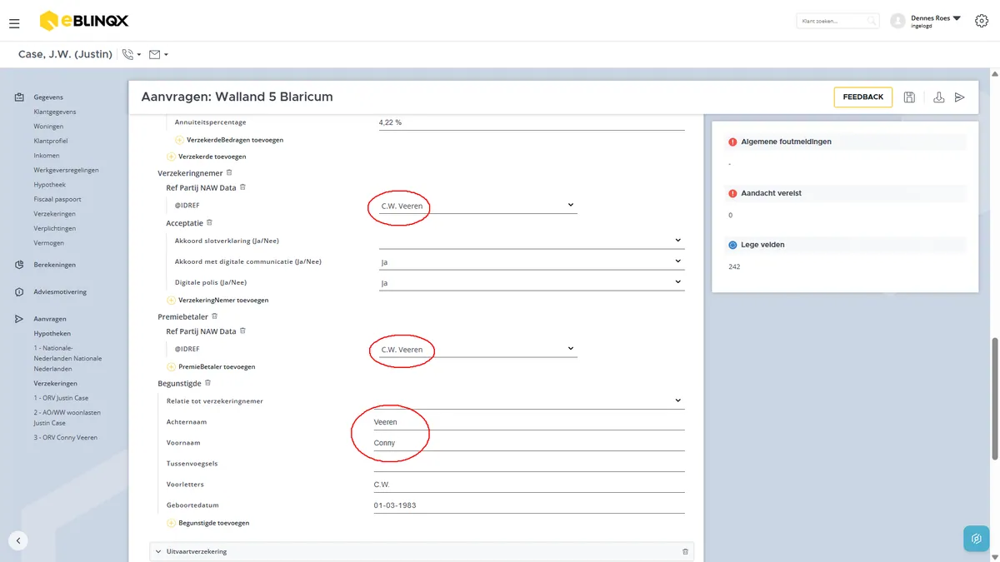
IT-22803: Uitbreiding mapping van velden bij overlijdensrisicoverzekering in HDN
We hebben de velden voor het aanvragen van een overlijdensrisicoverzekering verbeterd. In plaats van extra invoervelden toe te voegen in de eBlinqx Hypotheekadvies-software, worden de benodigde gegevens nu automatisch gemapt binnen HDN:
- De premiebetaler wordt automatisch vastgesteld op basis van de situatie:
- Heeft de aanvrager een partner en is alleen de aanvrager verzekerd? Dan wordt de partner automatisch premiebetaler, begunstigde en verzekeringnemer.
- Zijn beide partners verzekerd? Dan worden zij elkaars premiebetaler, verzekeringnemer en begunstigde.
- Is er geen partner? Dan is de aanvrager zowel verzekerde, verzekeringnemer, premiebetaler als begunstigde.
- De verzekeringnemer is altijd gelijk aan de premiebetaler en ook de begunstigde.
- De verzekerde is de persoon op wie de verzekering betrekking heeft en bepaalt ook of rookgedrag relevant is.
Met deze aanpassingen zorgen we voor een gestroomlijnd proces zonder extra invoer, waardoor de aanvraag soepeler verloopt.
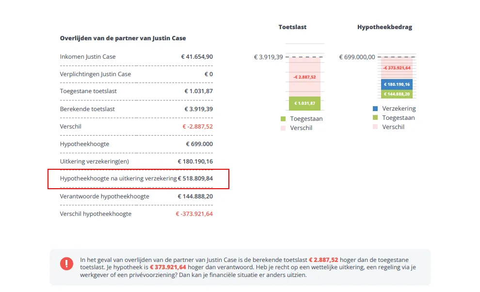
IT-25036: Resterende hypotheekhoogte na uitkering verzekering
In de verdiepende schermen van de eBlinqx Hypotheekadvies-software wordt de uitkering van een bestaande ORV correct verwerkt. Echter, de resterende hypotheekhoogte na deze uitkering ontbrak in het adviesrapport. Dit is nu gecorrigeerd, zodat het adviesrapport volledig aansluit bij de berekening.
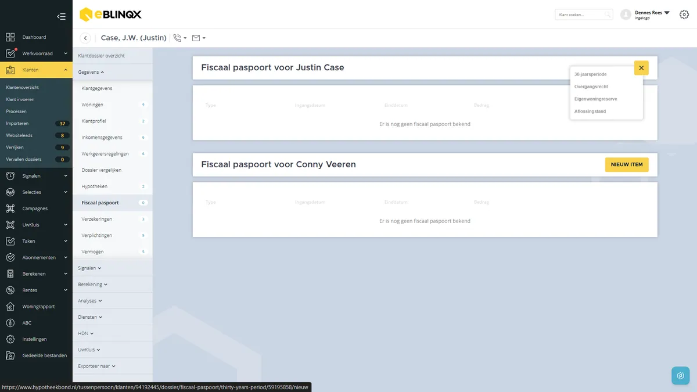
IT-9589: Fiscaal Paspoort
We hebben de rubriek ‘Fiscaal Paspoort’ toegevoegd aan de inventarisatie. Met het 'Fiscaal Paspoort' kan de adviseur belangrijke fiscale gegevens van zijn klant registeren, zoals:
- De bestaande eigen woningreserve
- Het overgangsrecht
- De aflossingsstand
- De eigen woningreserve
Deze toevoeging helpt adviseurs om het fiscale plaatje van hun klanten overzichtelijk en actueel te houden.
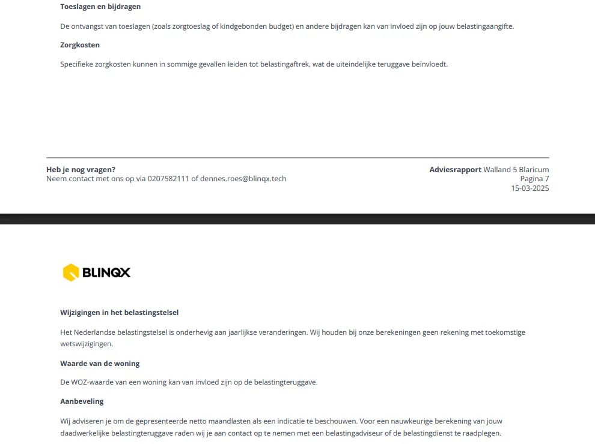
IT-24534: Verbeterde alinea-afbreking in het adviesrapport
Om de leesbaarheid van het adviesrapport te verbeteren, worden alinea’s nu correct afgebroken en volledig op de volgende pagina geplaatst. Voorheen kon het voorkomen dat een enkele regel onderaan een pagina verscheen, terwijl de rest van de alinea op de volgende pagina stond. Dit zorgde voor een onrustige leeservaring. Dankzij deze verbetering worden alinea’s nu netjes doorgezet naar de volgende pagina wanneer dat nodig is.
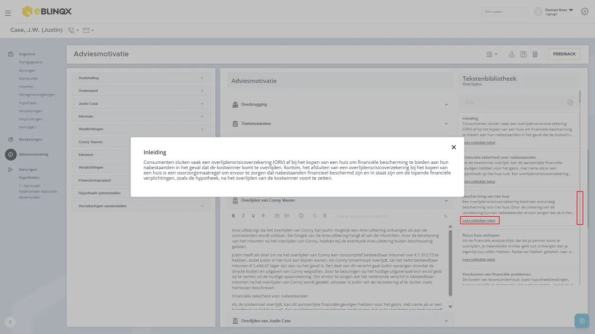
IT-24929: Verbetering adviesmotivering: duidelijke weergave van tekstenbibliotheek
Om de leesbaarheid en gebruikservaring bij de adviesmotivering te verbeteren, hebben we de verticale scrollbalk in de tekstenbibliotheek vervangen door een 'Lees volledige tekst'-link. In plaats van meerdere scrollmogelijkheden binnen de adviesmotivering, kan de adviseur nu eenvoudig op de link 'Lees volledige tekst' klikken. Hierdoor opent een pop-upvenster met de volledige tekst, wat zorgt voor een rustigere en overzichtelijkere werkomgeving.
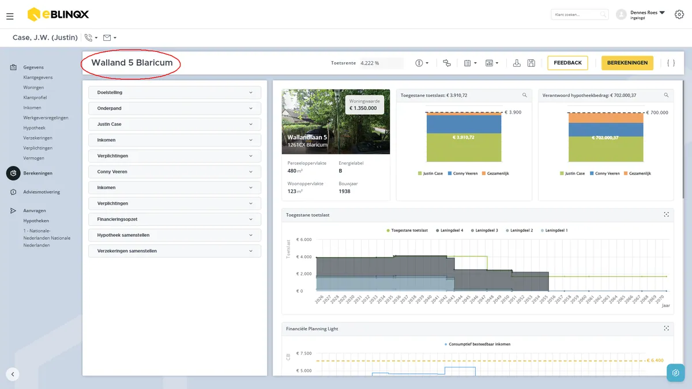
IT-24365: Dynamische titelbalk bij nieuwe berekeningen
Bij het starten van een nieuwe berekening wordt in de titelbalk standaard de naam "Fastlane Advies" weergegeven. Zodra er een eigen naam voor de berekening wordt ingevuld in de omschrijving, vervangt deze automatisch "Fastlane Advies". Hierdoor ontstaat, indien gewenst, meer ruimte voor een duidelijke tenaamstelling van de berekening.
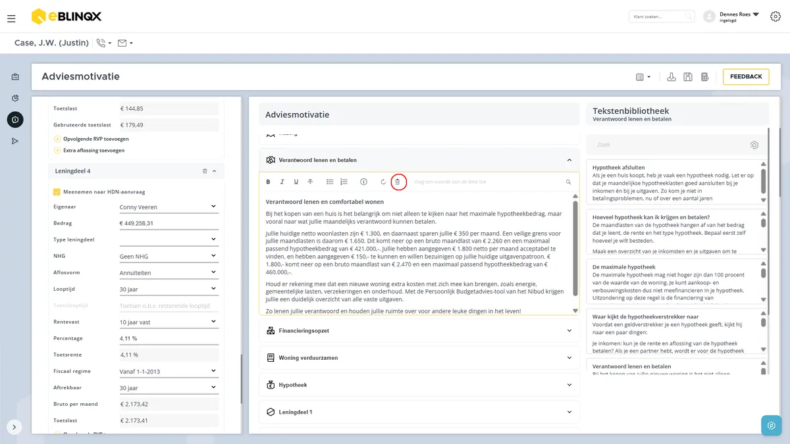
IT-24740: Prullenbakicoon toegevoegd aan motivatievak bij ‘Adviesmotivering’
Er is een prullenbakicoon toegevoegd aan elk motivatievak binnen ‘Adviesmotivering’. Adviseurs kunnen hiermee in één klik de tekst wissen, zonder extra bevestiging.
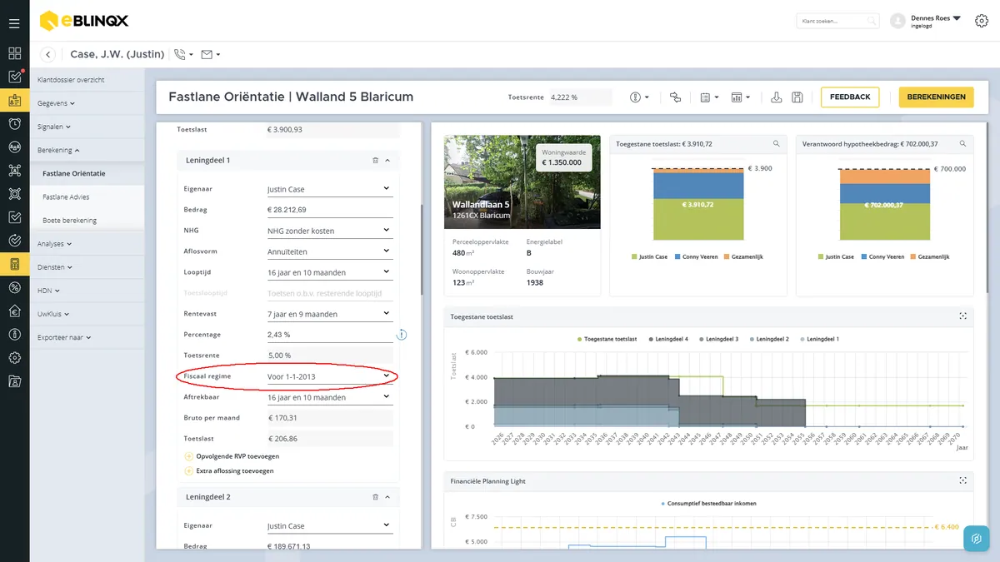
IT-24761: Inventarisatie van ‘Fiscale regime’ nu beschikbaar in Fastlane Oriëntatie
De mogelijkheid om het 'Fiscale regime' van een leningdeel te inventariseren is nu ook toegevoegd aan Fastlane Oriëntatie. Hierdoor kunnen gebruikers deze informatie direct in het oriëntatieproces meenemen.
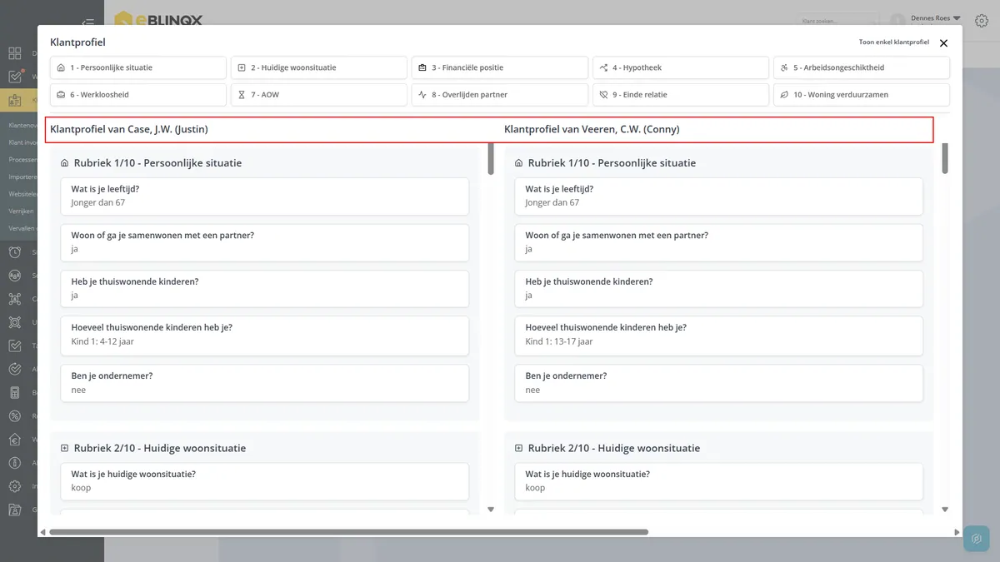
IT-24441: Gefixeerde rij met klantnamen in presentatie klantprofiel
De bovenste rij met klantnamen in het klantprofiel is nu gefixeerd. Dit zorgt ervoor dat de namen zichtbaar blijven bij het scrollen, zodat altijd duidelijk is welke kolom bij welke klant hoort.
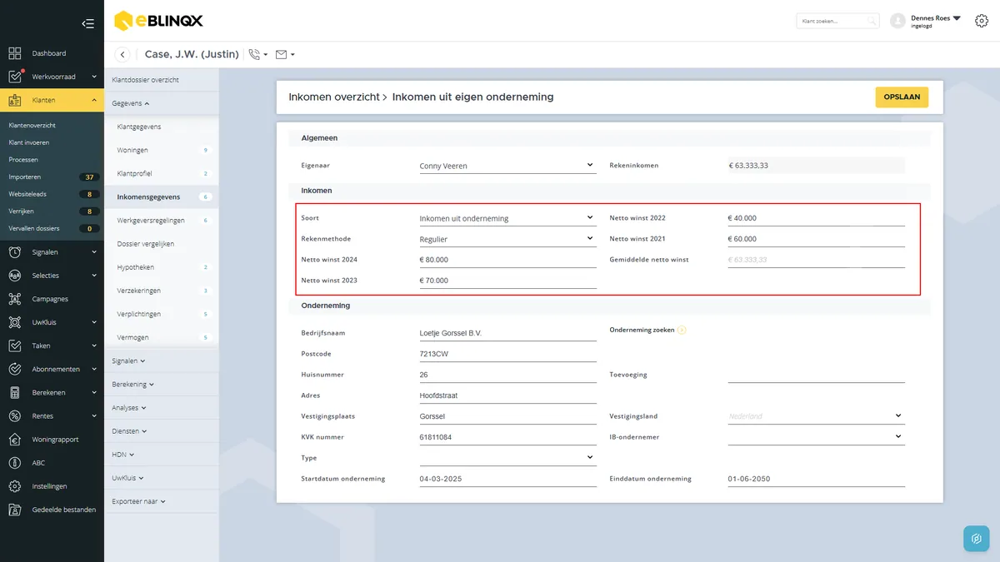
IT-23302: Alleen laatste drie ingevulde nettowinstbedragen gebruikt voor berekeningen
Bij berekeningen wordt voortaan alleen de nettowinst van de drie meest recente ingevulde jaren meegenomen. Daarnaast kan de adviseur nu ook een negatieve jaarwinst (verlies) invoeren.
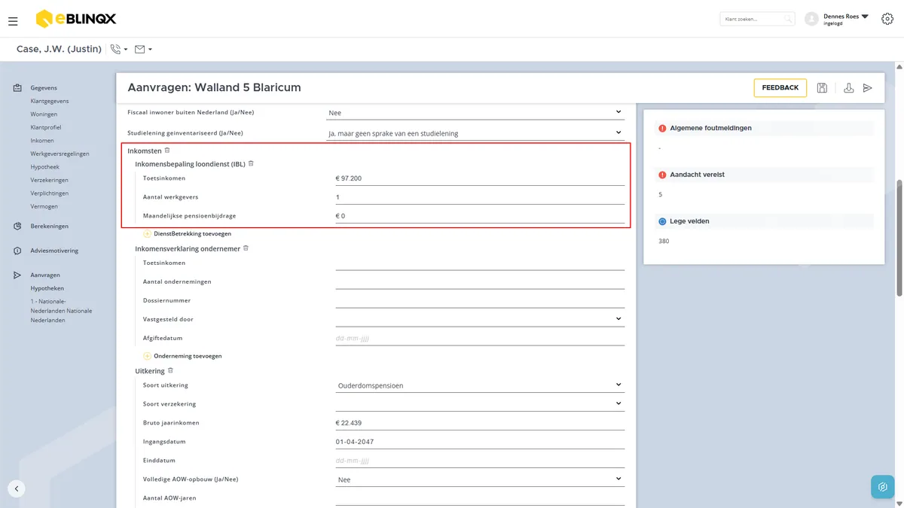
IT-24760: Verbetering HDN-formulier bij Inkomensbepaling Loondienst (IBL)
Bij het invullen van een Inkomensbepaling Loondienst (IBL) werd onterecht zowel een IBL als een werkgeversverklaring aangemaakt in het HDN-formulier. Dit is nu gecorrigeerd. Deze wijziging zorgt voor een nauwkeurigere verwerking van inkomensgegevens in HDN-aanvragen.